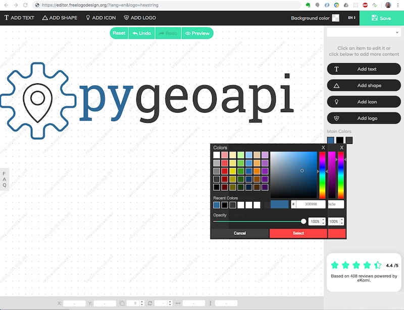

pygeoapi logo
The pygeoapi logo was created on August 21, 2019 on https://www.freelogodesign.org by justb4.
The design files can be found in the subdirs below. Usable logo files can be found under img.
As that dir is in gh-pages which is CNAMEd to https://pygeoapi.io, pygeoapi logos and icons can be linked directly without a need for copying: e.g.
https://pygeoapi.io/img/pygeoapi-logo.png or without transparency: https://pygeoapi.io/img/pygeoapi-logo-notrans.png.
Result
Logo

Icon
Design
In theory it is possible to recreate the logo, or a color-variant, but the freelogodesign.org session is one-time (with payment) only.
Below a screenshot of the design session.

Within this session one can mix icons and texts, hundreds of icons are available (via search) The logo was created as follows:
- provide text, choose domain "Technology"
- ignore all suggestions, start a fresh logo with just text
- text: "pygeoapi", selected the
RoboSlab RegularFont - icon 1: search for a
cogorcogwheelicon (there are hundreds available) until you find one without a circle internally - icon 2: search for a
markericon - place the marker icon within the cogwheel icon
- colors: blue is "Python logo blue": hex
#306998and "black" is grayish:#3a3a3a. - ensure result has transparency
- saved and paid EUR 34,-, received .zip file with designs SVGs various resolutions shortly after that
- NB the square
pygeoapiicon was cut off manually (in Preview Mac) - also favicons need to be created manually